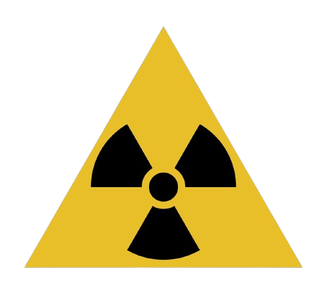

Tipos de Radiação
Os diferentes tipos de radiação são classificados em ionizante e não ionizante, a radiação ionizante tem energia suficiente para remover um elétron de um átomo e, assim, produzir íons. Já a radiação não ionizante apenas eleva a temperatura e causa agitação das moléculas, mas não altera a estrutura do material.
Radiações ionizantes:
A radiação ionizante tem a capacidade de produzir íons ao arrancar elétrons de um átomo. Por possuir maior energia, pode separar elétrons de outros átomos ou ionizá-los à medida que penetra a matéria.
São exemplos de radiação ionizantes:
As emissões alfa são partículas pesadas, de carga positiva e formadas por dois prótons e dois nêutrons. Possuem pequeno poder de penetração e, por isso, a sua radioatividade pode ser impedida por uma folha de papel.
As emissões beta são partículas leves e compostas por apenas um elétron. Dessa forma, apresentam carga negativa e não contêm massa. Possuem poder de penetração intermediário, podendo penetrar uma folha de papel, mas não uma placa de metal.
As emissões gama são ondas eletromagnéticas de altíssima frequência, que não possuem massa e carga elétrica. A capacidade de penetração é superior às demais partículas, fazendo com que a sua radioatividade passe tanto pelo papel como pelo metal.
Radiações não ionizantes:
A radiação não ionizante não tem energia suficiente para remover elétrons de um átomo por apresentar baixa frequência e baixa liberação de energia. Entretanto, conseguem mover os átomos ou fazê-los vibrar.
São exemplos:
A luz visível é a parte do espectro eletromagnético que pode ser vista a olho nu e seus comprimentos de onda (λ) são classificados por cor que vai do violeta, λ = 4.10-7 m, ao vermelho, λ = 7.10-7 m.
As ondas de rádio são radiações de baixa frequência utilizadas, por exemplo, em equipamentos de ressonância magnética e antenas transmissoras de sinais de rádio.
As micro-ondas apresentam frequência maior que as ondas de rádio e estão presentes no forno de micro-ondas, que tem como objetivo aquecer alimentos. A radiação ultravioleta apesar de não ser visível, pode ser sentida pelos seres humanos.
O Sol é o maior emissor desse tipo de radiação. A radiação infravermelha é uma radiação térmica utilizada para mapear zonas com diferentes incidências de calor.